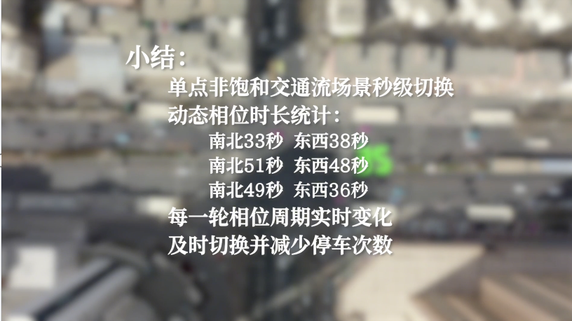

基于深度强化学习的交通信号优化系统，支持多算法自适应调度，覆盖仿真到生产环境全链路，开箱即用。
从仿真验证到生产部署，一套 SDK 全搞定。支持多算法自适应调度，无需人工干预。
内置 v1 规则（稳定RL）、v2 离线 RL、v3 在线 RL，支持按置信度/流量自动降级切换，稳定兜底。
单次决策耗时小于 100ms，支持 1Hz 实时控制循环，满足生产环境严苛时延要求。
统一 SDK 接口，CityFlow / SUMO 仿真验证后无需改动代码，一键切换到生产 Redis/NATS 环境。
SafeRules 兜底机制，最小绿灯、最大保持、溢出保护，异常情况下不输出危险指令。
内置健康检查、决策指标、内存监控，支持向平台上报状态，异常时自动告警。
解压即运行，一行命令启动，配置向导自动完成连接设置，现场无需改代码。
展示核心交通信号控制算法的基础运作原理，包括相序调度、绿信比分配等关键机制的可视化演示。

对比展示同一路口在高饱和流量下的两种状态：左侧为无算法控制时的溢出拥堵场景，右侧为算法介入后的优化效果，直观呈现系统的实际价值。
PolicyManager 统一调度，感知层 → 算法层 → 执行层分离，支持按需替换任意组件。
支持相机、雷达、平台下发等多种感知源输入，自动校准数据质量与时延补偿。
Redis / NATS / MQTT 一套接口适配，仿真与生产环境切换无需改代码。
PolicyManager 按置信度自动选择 v1/v2/v3 算法，异常时自动降级到规则兜底。
SafeRules 兜底、最小绿灯、最大保持、溢出保护，异常时绝不输出危险指令。
完整示例代码在 GitHub 仓库，包含 CityFlow 仿真、SUMO 仿真和生产环境三种模式，克隆后即可运行。
# 查看所有示例 git clone https://github.com/OpenTraffic-Team/OpenTraffic-Control cd OpenTraffic-Control/algorithms_sdk/examples # CityFlow 仿真 python quick_demo.py # SUMO 仿真 python simulation_demo.py # 生产环境 python production_demo.py # 或直接 pip 安装 pip install opentraffic-sdk python -c "from algorithms_sdk import AlgorithmSDK; print('OK')"
开源免费，支持 CityFlow 仿真和生产环境部署